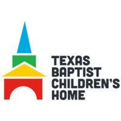

Service
Put on our school's 2nd consecutive 8th Grade Valentine's Day Dance with all proceeds going towards the American Heart Association, a nonprofit that funds research for heart disease and related conditions

Had the opportunity to volunteer for 3 years with the Leukemia and Lymphoma Society and was on the leading team of 15 students getting to present the fundraiser to K-6 students my final year. The organization funds research for Leukemia and supports patients and their families financially. Our school raised over $15,000 in 3 years for LLS with half of that amount coming from the year our team led. Glad to say that even more was raised in conjunction with my high school the year after my class graduated

Volunteered for summer events with my church at the Texas Baptist Children's Home, a place that provides a home, needs and beyond for orphans. Getting to meet and mentor the kids was often a humbling experience and at times I enjoyed the experience of running soccer games and holding group talk more than they did at times